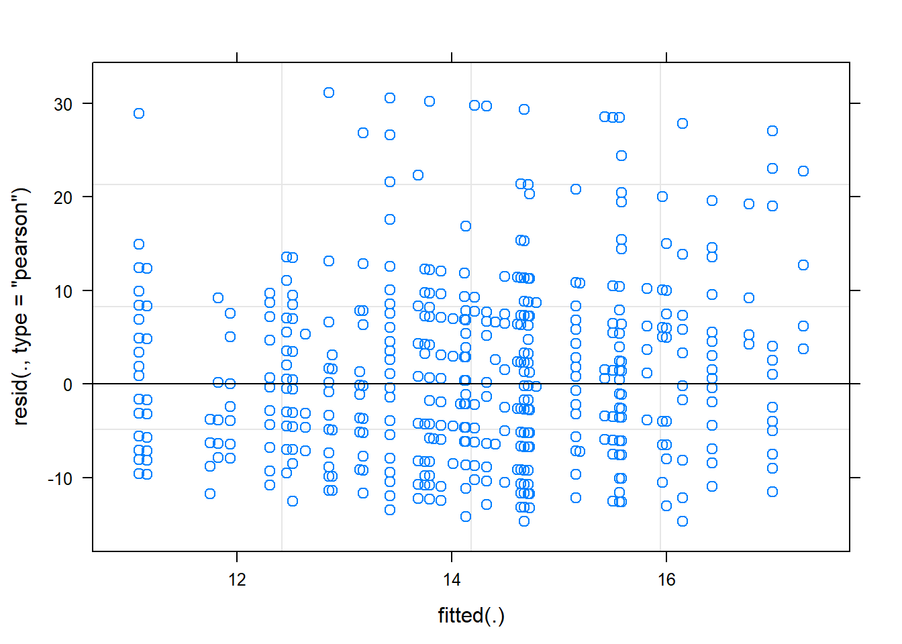
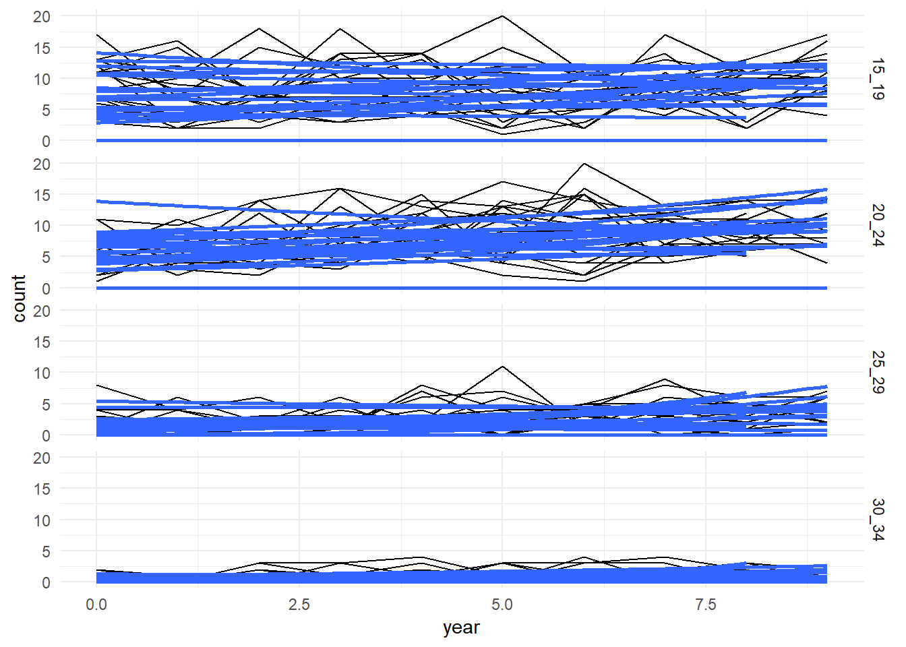
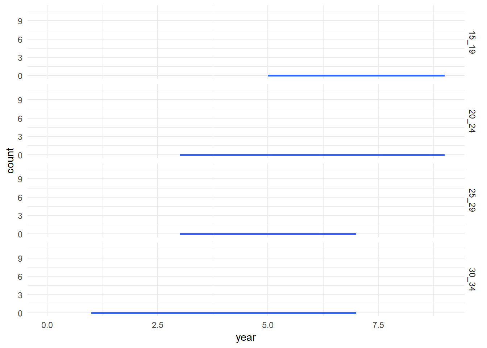
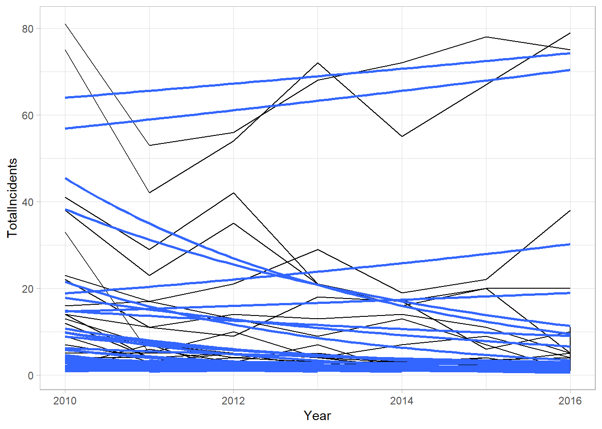
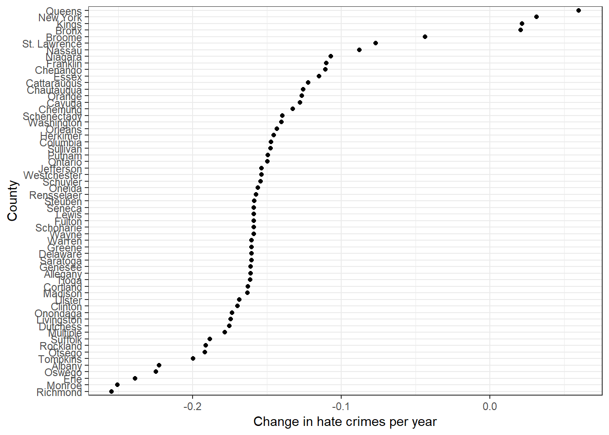

Chapter 6 Multi Level Models
6.1 Introduction
library(lme4)## Warning: package 'lme4' was built under R version 3.5.2## Loading required package: Matrix##
## Attaching package: 'Matrix'## The following object is masked from 'package:tidyr':
##
## expandlibrary(foreign)
library(broom)
library(tidyverse)Fixed-effect parameters only use data for a specific group. In contrast, random-effect parameters assume data share a common distribution. FOr situations with small amounts of data or ourliers, random effect models can produce different estimates.
evolution<-read.dta("http://j.mp/BPchap7")
evolution$female[evolution$female==9]<-NA
evolution<-subset(evolution,!is.na(female))6.1.1 full model
hours_ml<-lmer(hrs_allev ~ phase1 + senior_c + ph_senior + notest_p + ph_notest_p + female + biocred3 +
degr3 + evol_course + certified + idsci_trans + confident + (1|st_fip), data = evolution)6.1.2 building the model
Here we are building a random effects with no fixed effects:
initial <- lmer(hrs_allev ~ (1 | st_fip), data = evolution)
summary(initial)## Linear mixed model fit by REML ['lmerMod']
## Formula: hrs_allev ~ (1 | st_fip)
## Data: evolution
##
## REML criterion at convergence: 6049
##
## Scaled residuals:
## Min 1Q Median 3Q Max
## -1.6954 -0.7003 -0.2460 0.6036 3.5975
##
## Random effects:
## Groups Name Variance Std.Dev.
## st_fip (Intercept) 5.046 2.246
## Residual 74.952 8.657
## Number of obs: 841, groups: st_fip, 49
##
## Fixed effects:
## Estimate Std. Error t value
## (Intercept) 14.222 0.477 29.82plot(initial)
Now let’s build one with a fixed-effect slope parameter:
fixed <- lmer(hrs_allev ~ phase1 + (1 | st_fip), data = evolution)
summary(fixed)## Linear mixed model fit by REML ['lmerMod']
## Formula: hrs_allev ~ phase1 + (1 | st_fip)
## Data: evolution
##
## REML criterion at convergence: 6044.3
##
## Scaled residuals:
## Min 1Q Median 3Q Max
## -1.7107 -0.6892 -0.2430 0.6116 3.6573
##
## Random effects:
## Groups Name Variance Std.Dev.
## st_fip (Intercept) 4.65 2.156
## Residual 74.79 8.648
## Number of obs: 841, groups: st_fip, 49
##
## Fixed effects:
## Estimate Std. Error t value
## (Intercept) 14.2695 0.4672 30.541
## phase1 0.9433 0.4425 2.132
##
## Correlation of Fixed Effects:
## (Intr)
## phase1 0.058Now to add a random slope:
random_slopes <- lmer(hrs_allev ~ phase1 + (notest_p | st_fip), data = evolution)
broom::tidy(random_slopes)## Warning in bind_rows_(x, .id): binding factor and character vector,
## coercing into character vector## Warning in bind_rows_(x, .id): binding character and factor vector,
## coercing into character vector## # A tibble: 6 x 5
## term estimate std.error statistic group
## <chr> <dbl> <dbl> <dbl> <chr>
## 1 (Intercept) 14.3 0.458 31.2 fixed
## 2 phase1 0.829 0.424 1.96 fixed
## 3 sd_(Intercept).st_fip 2.34 NA NA st_fip
## 4 sd_notest_p.st_fip 0.924 NA NA st_fip
## 5 cor_(Intercept).notest_p.st_fip -1.000 NA NA st_fip
## 6 sd_Observation.Residual 8.65 NA NA ResidualIf we wanted to assume uncorrelated random-effect slopes (it is actually easier to calculate) all we have to do is turn | into || (though you likely want a reason to do this, I am just doing here for instruction)
uncor <- lmer(hrs_allev ~ phase1 + (notest_p || st_fip), data = evolution)## singular fitsummary(uncor)## Linear mixed model fit by REML ['lmerMod']
## Formula: hrs_allev ~ phase1 + ((1 | st_fip) + (0 + notest_p | st_fip))
## Data: evolution
##
## REML criterion at convergence: 6044.3
##
## Scaled residuals:
## Min 1Q Median 3Q Max
## -1.7107 -0.6892 -0.2430 0.6116 3.6573
##
## Random effects:
## Groups Name Variance Std.Dev.
## st_fip (Intercept) 4.65 2.156
## st_fip.1 notest_p 0.00 0.000
## Residual 74.79 8.648
## Number of obs: 841, groups: st_fip, 49
##
## Fixed effects:
## Estimate Std. Error t value
## (Intercept) 14.2695 0.4672 30.541
## phase1 0.9433 0.4425 2.132
##
## Correlation of Fixed Effects:
## (Intr)
## phase1 0.058
## convergence code: 0
## singular fitYou can also have a variable as a fixed effect while correcting for random slopes:
# fixed_random <- lmer(hrs_allev ~ phase1 + (phase1 || st_fip), data = evolution)
#
# summary(fixed_random)6.1.3 Understanding and reporting the outputs
Point estimates
# fixef(fixed_random)# ranef(fixed_random)We can also get confidence interals for the fixed effects using confint()
# confint(fixed_random)Using the broom.mixed package, you can use the tidy() function to extract model results, though this isn’t as tidy as most models are:
library(broom)
# tidy(fixed_random, conf.int = TRUE)6.1.4 Communicating results
This is not very easy to extract lmer results (see link).
# # Extract out the parameter estimates and confidence intervals and manipulate the data
# dataPlot <- data.frame(cbind( fixef(fixed_random), confint(fixed_random)[ 4:5, ])) # getting the rows for confint
# rownames(dataPlot)[1] <- "Intercept"
# colnames(dataPlot) <- c("est", "L95", "U95")
# dataPlot$parameter <- rownames(dataPlot)
#
# # Print the new dataframe
# print(dataPlot)
#
# # Plot the results using ggplot2
# ggplot(dataPlot, aes(x = parameter, y = est, ymin = L95, ymax = U95)) +
# geom_hline( yintercept = 0, color = 'red' ) +
# geom_linerange() +
# geom_point() +
# coord_flip() +
# theme_minimal()It is important that in many instances, rescaling might have to occur to make the model numerically viable (for instance, changing the year in our study to be 0 instead of the actual year).
6.1.5 Model comparison with Anova
What happens if we include more variables or model it differently? Well we can use anove to determine which model is better:
# anova(random_slopes, fixed_random)In this instance the fixed_random does a better job, but is not significantly better.
6.2 GLMs
6.2.1 Binomial Data
code: glmer(y ~ x + (1 | group), family = ‘error term’)
Here we are using the Bang dataset which is a survey of contraception use for women in Bangladesh. The variables we are using for the model is whether they used the contraception (user), then the number of living children they had (living.children), the age centered around the mean (age_mean), and whether they lived in an urban or rural area (urban). The random intercept in this case is the district where they reside.
library(epiDisplay)## Warning: package 'epiDisplay' was built under R version 3.5.3## Loading required package: survival## Loading required package: nnet##
## Attaching package: 'epiDisplay'## The following object is masked from 'package:lmtest':
##
## lrtest## The following object is masked from 'package:scales':
##
## alpha## The following object is masked from 'package:ggplot2':
##
## alphadata(Bang)
cont_model <- glmer(user ~ living.children + age_mean + urban + (1 | district),
family = "binomial",
data = Bang)Now let’s look at the results
summary(cont_model)## Generalized linear mixed model fit by maximum likelihood (Laplace
## Approximation) [glmerMod]
## Family: binomial ( logit )
## Formula: user ~ living.children + age_mean + urban + (1 | district)
## Data: Bang
##
## AIC BIC logLik deviance df.resid
## 2453.9 2481.7 -1221.9 2443.9 1929
##
## Scaled residuals:
## Min 1Q Median 3Q Max
## -1.9844 -0.7621 -0.5338 1.0010 2.4039
##
## Random effects:
## Groups Name Variance Std.Dev.
## district (Intercept) 0.2156 0.4643
## Number of obs: 1934, groups: district, 60
##
## Fixed effects:
## Estimate Std. Error z value Pr(>|z|)
## (Intercept) -1.855018 0.183266 -10.122 < 2e-16 ***
## living.children 0.421155 0.057540 7.319 2.49e-13 ***
## age_mean -0.030872 0.007828 -3.944 8.02e-05 ***
## urban 0.722556 0.118302 6.108 1.01e-09 ***
## ---
## Signif. codes: 0 '***' 0.001 '**' 0.01 '*' 0.05 '.' 0.1 ' ' 1
##
## Correlation of Fixed Effects:
## (Intr) lvng.c age_mn
## lvng.chldrn -0.876
## age_mean 0.606 -0.704
## urban -0.254 0.097 -0.051Everything is significant, and pretty much what we would expect. The more kids, the more likely you are to use it, The older you are, the less likely you are. And women in urban areas use them more. The coefficients however, are difficult to read becasue they are in log-dds. We can change this to odds ratios by taking the exponent. Here is a short explanation of odds-ratios:
- If an odds-ratio is 1.0, then both events have an equal chance of occurring. For example, if the odds-ratio for a urban was 1.0, then living in an urban/rural area would have no influence on contraception use.
- If an odds-ratio is less than 1, then living in an urban area would decrease the chance of using contraception. For example, an odds-ratio of 0.5 would mean a those living in urban areas have odds of 1:2 or 1 woman using contraception for every 2 women in rural areas.
- If an odds-ratio is greater than 1, then living in an urban area would increase the chance of contraception use. For example, an odds-ratio of 3.0 would mean living in an urban area has odds of 3:1 or 3 women using contraception in an urban area compared to those in rural areas.
# calculating odds ratios and the confidence intervals for them
exp(fixef(cont_model))## (Intercept) living.children age_mean urban
## 0.1564501 1.5237206 0.9696001 2.0596918exp(confint(cont_model))## Computing profile confidence intervals ...## 2.5 % 97.5 %
## .sig01 1.3870276 1.8949934
## (Intercept) 0.1085024 0.2229839
## living.children 1.3624164 1.7076706
## age_mean 0.9546908 0.9844856
## urban 1.6334721 2.59829866.2.2 Count models
pretty simple change in formula: glmer(y ~ x + (1 | group), family = 'poisson')
Here we are using data about chlamydia given by the state of illinois. We basically want to see if things are getting better over time, and whether age groups have this problem at different rates.
chlamydia <- read_csv("https://assets.datacamp.com/production/repositories/1803/datasets/612bd6490500636efa74132bfbc37817f250cb5a/ILdata.csv")## Parsed with column specification:
## cols(
## age = col_character(),
## year = col_double(),
## county = col_character(),
## count = col_double()
## )count_chlamydia <- glmer(count ~ age + year + (year | county), family = "poisson",
data = chlamydia)## Warning in checkConv(attr(opt, "derivs"), opt$par, ctrl =
## control$checkConv, : Model failed to converge with max|grad| = 0.00144074
## (tol = 0.001, component 1)summary(count_chlamydia)## Generalized linear mixed model fit by maximum likelihood (Laplace
## Approximation) [glmerMod]
## Family: poisson ( log )
## Formula: count ~ age + year + (year | county)
## Data: chlamydia
##
## AIC BIC logLik deviance df.resid
## 3215.6 3259.6 -1599.8 3199.6 1800
##
## Scaled residuals:
## Min 1Q Median 3Q Max
## -2.4511 -0.0151 -0.0056 -0.0022 4.0053
##
## Random effects:
## Groups Name Variance Std.Dev. Corr
## county (Intercept) 129.9459 11.3994
## year 0.0648 0.2546 -1.00
## Number of obs: 1808, groups: county, 47
##
## Fixed effects:
## Estimate Std. Error z value Pr(>|z|)
## (Intercept) -10.76258 2.13022 -5.052 4.36e-07 ***
## age20_24 -0.04152 0.03690 -1.125 0.261
## age25_29 -1.16262 0.05290 -21.976 < 2e-16 ***
## age30_34 -2.28278 0.08487 -26.898 < 2e-16 ***
## year 0.32708 0.25422 1.287 0.198
## ---
## Signif. codes: 0 '***' 0.001 '**' 0.01 '*' 0.05 '.' 0.1 ' ' 1
##
## Correlation of Fixed Effects:
## (Intr) a20_24 a25_29 a30_34
## age20_24 -0.008
## age25_29 -0.006 0.341
## age30_34 -0.004 0.213 0.148
## year -0.764 0.000 0.000 0.000
## convergence code: 0
## Model failed to converge with max|grad| = 0.00144074 (tol = 0.001, component 1)So there is a difference by age group for 2 categories. Now let’s show them in a good format:
fixef(count_chlamydia)## (Intercept) age20_24 age25_29 age30_34 year
## -10.76258497 -0.04151848 -1.16262225 -2.28277972 0.32708039ranef(count_chlamydia)## $county
## (Intercept) year
## ALEXANDER -0.2847724 0.006331741
## BROWN -0.2847724 0.006331741
## CALHOUN -0.2847724 0.006331741
## CARROLL 12.2418514 -0.260423999
## CASS -0.2847724 0.006331741
## CLARK 12.2137668 -0.268553354
## CLAY -0.2847724 0.006331741
## CRAWFORD 12.5037407 -0.265752695
## CUMBERLAND -0.2847724 0.006331741
## DE WITT 12.7456078 -0.277675211
## DOUGLAS 13.0751590 -0.306329903
## EDGAR 12.3642794 -0.283606045
## EDWARDS -0.2847724 0.006331741
## FAYETTE 12.8094530 -0.273060474
## FORD -0.2847724 0.006331741
## GALLATIN -0.2847724 0.006331741
## GREENE -0.2847724 0.006331741
## HAMILTON -0.2847724 0.006331741
## HANCOCK 12.8581265 -0.305650287
## HARDIN -0.2847724 0.006331741
## HENDERSON -0.2847724 0.006331741
## IROQUOIS 13.1616741 -0.311372907
## JASPER -0.2847724 0.006331741
## JERSEY 12.9202747 -0.272284048
## JO DAVIESS 12.7409389 -0.289747791
## JOHNSON -0.2847724 0.006331741
## LAWRENCE 12.3713561 -0.268571236
## MARSHALL -0.2847724 0.006331741
## MASON -0.2847724 0.006331741
## MENARD -0.2180916 0.004849989
## MERCER 12.7534193 -0.271678572
## MOULTRIE -0.2180916 0.004849989
## PIATT 12.5653132 -0.296687752
## PIKE 12.5310614 -0.259211299
## POPE -0.2180916 0.004849989
## PULASKI -0.2180916 0.004849989
## PUTNAM -0.2180916 0.004849989
## RICHLAND 12.0350865 -0.273928951
## SCHUYLER -0.2180916 0.004849989
## SCOTT -0.2180916 0.004849989
## SHELBY 12.5183293 -0.283472292
## STARK -0.2180916 0.004849989
## UNION 13.1465272 -0.308673332
## WABASH -0.2180916 0.004849989
## WASHINGTON -0.2180916 0.004849989
## WAYNE 12.1148896 -0.253234752
## WHITE -0.2180916 0.004849989
##
## with conditional variances for "county"We can plot this in a similar fashion using ggplot, though it won’t be exactly the same as the glmer() outputs: (UGLY)
# fits 4 graphs with I believe 47 lines for the actual data and 47 predicted
ggplot(chlamydia, aes(x = year, y = count, group = county)) +
geom_line() +
facet_grid(age ~ .) +
stat_smooth(method = "glm", method.args = list(
family = "poisson"), se = FALSE, alpha = 0.5) +
theme_minimal()
I think this still works, but gives a few number of counties:
chlamydia %>%
filter(county == sample(county, 10)) %>%
ggplot(aes(x = year, y = count, group = county)) +
geom_line() +
facet_grid(age ~ .) +
stat_smooth(method = "glm", method.args = list(
family = "poisson"), se = FALSE, alpha = 0.5) +
theme_minimal()## Warning in county == sample(county, 10): longer object length is not a
## multiple of shorter object length
6.3 Repeated Measures
They are a special case of mixed-effects models. Following individuals through time. We may do a paired, t-test. You can also do a repeated measures ANOVA from more than just 2 tests (it could be test scores for every year of score).
There is no default measure for running a repeated measure ANOVA by doing:
library(lmertest) anova(lmer(y ~ time + (1|individual)))
This can also do this for lmer nad glmer. Need to add a time variable and a group variable.
6.3.1 Paired T-test
We are going to show this with randomly simulated data of 10 observations.
# Set the seed to be 345659
set.seed(345659)
# simulate before with mean of 0 and sd of 0.5
before <- rnorm(10, mean = 0, sd = 0.5)
# simulate after with mean effect of 4.5 and standard devation of 5
after <- before + rnorm(10, mean = 4.5, sd = 5)
# Run a standard, non-paired t-test
t.test(x = before, y =after, paired = FALSE)##
## Welch Two Sample t-test
##
## data: before and after
## t = -4.6991, df = 9.3736, p-value = 0.001004
## alternative hypothesis: true difference in means is not equal to 0
## 95 percent confidence interval:
## -7.966165 -2.809916
## sample estimates:
## mean of x mean of y
## -0.2201914 5.1678489# Run a standard, paired t-test
t.test(x = before, y =after, paired = TRUE)##
## Paired t-test
##
## data: before and after
## t = -5.138, df = 9, p-value = 0.0006129
## alternative hypothesis: true difference in means is not equal to 0
## 95 percent confidence interval:
## -7.760267 -3.015813
## sample estimates:
## mean of the differences
## -5.38804In this case, both the paired and the unpaired versions were significant, but the paired one showed a larger difference (more powerful).
6.3.2 Repeated Measures ANOVA
here we are going to use this process but for repeated (more than 2) measures using ANOVA. First, though, we have to create a data frame using the variables from the last section.
# Create the data.frame, using the variables from the previous exercise.
# y is the joined vectors before and after.
# trial is the repeated names before and after, each one repeated n_ind
# ind is the letter of the individual, repeated 2 times (because there were two observations)
dat <- data.frame(y = c(before, after),
trial = rep(c("before", "after"), each = 10),
ind = rep(letters[1:10], times = 2))library(lmerTest)## Warning: package 'lmerTest' was built under R version 3.5.3##
## Attaching package: 'lmerTest'## The following object is masked from 'package:lme4':
##
## lmer## The following object is masked from 'package:stats':
##
## step# Run a standard, paired t-test
t.test(before, after, paired = TRUE)##
## Paired t-test
##
## data: before and after
## t = -5.138, df = 9, p-value = 0.0006129
## alternative hypothesis: true difference in means is not equal to 0
## 95 percent confidence interval:
## -7.760267 -3.015813
## sample estimates:
## mean of the differences
## -5.38804# Run a lmer and save it as lmer_out
lmer_out <- lmer(y ~ trial + (1| ind), data = dat)
# Look at the summary() of lmer_out
summary(lmer_out)## Linear mixed model fit by REML. t-tests use Satterthwaite's method [
## lmerModLmerTest]
## Formula: y ~ trial + (1 | ind)
## Data: dat
##
## REML criterion at convergence: 89.3
##
## Scaled residuals:
## Min 1Q Median 3Q Max
## -1.89008 -0.30775 -0.02928 0.22414 2.41195
##
## Random effects:
## Groups Name Variance Std.Dev.
## ind (Intercept) 1.075 1.037
## Residual 5.498 2.345
## Number of obs: 20, groups: ind, 10
##
## Fixed effects:
## Estimate Std. Error df t value Pr(>|t|)
## (Intercept) 5.1678 0.8108 17.5311 6.374 5.99e-06 ***
## trialbefore -5.3880 1.0487 9.0000 -5.138 0.000613 ***
## ---
## Signif. codes: 0 '***' 0.001 '**' 0.01 '*' 0.05 '.' 0.1 ' ' 1
##
## Correlation of Fixed Effects:
## (Intr)
## trialbefore -0.647In this case, the intercept is the same for the lmer and the t.test! So the lmer is basically an extension fo the paired t.test.
6.3.3 Example: NY Hate Crime Data
hate <- read_csv("https://assets.datacamp.com/production/repositories/1803/datasets/45e88fe1bc8d1d76d140e69cb873da9eddb7008e/hateNY.csv")## Parsed with column specification:
## cols(
## Year = col_double(),
## County = col_character(),
## TotalIncidents = col_double(),
## Year2 = col_double()
## )hate## # A tibble: 233 x 4
## Year County TotalIncidents Year2
## <dbl> <chr> <dbl> <dbl>
## 1 2010 Albany 13 0
## 2 2011 Albany 7 1
## 3 2012 Albany 5 2
## 4 2013 Albany 3 3
## 5 2014 Albany 3 4
## 6 2015 Albany 3 5
## 7 2016 Albany 3 6
## 8 2013 Allegany 1 3
## 9 2010 Bronx 22 0
## 10 2011 Bronx 11 1
## # ... with 223 more rowsGive the different population sizes of New York counties, you can reasonably assume the need for random-effect intercepts a priori. However, do you need random-effect slopes? Plot the data to see if trends appear to vary by county. Additionally, plotting the data will help you see what is going on.
ggplot(hate, aes(x = Year, y = TotalIncidents, group = County)) +
geom_line() +
geom_smooth(method = "glm", method.args = c("poisson"), se = FALSE)
From the graph above, it looks like we need both random intercepts and random slopes.
Now let’s build a simple glm model and then we cna move onto glmer.
ny_hate_mod1 <- glm(TotalIncidents ~ Year + County, data = hate, family = "poisson")
summary(ny_hate_mod1)##
## Call:
## glm(formula = TotalIncidents ~ Year + County, family = "poisson",
## data = hate)
##
## Deviance Residuals:
## Min 1Q Median 3Q Max
## -3.8488 -0.6322 -0.1068 0.4336 4.9002
##
## Coefficients:
## Estimate Std. Error z value Pr(>|z|)
## (Intercept) 121.98334 21.85207 5.582 2.37e-08 ***
## Year -0.05977 0.01086 -5.506 3.67e-08 ***
## CountyAllegany -1.65787 1.01343 -1.636 0.101859
## CountyBronx 1.15126 0.18861 6.104 1.04e-09 ***
## CountyBroome -0.90255 0.32242 -2.799 0.005121 **
## CountyCattaraugus -1.45353 0.47648 -3.051 0.002284 **
## CountyCayuga -1.01203 0.44017 -2.299 0.021494 *
## CountyChautauqua -1.48607 0.47654 -3.118 0.001818 **
## CountyChemung -1.70959 0.60037 -2.848 0.004405 **
## CountyChenango -1.17785 0.47650 -2.472 0.013441 *
## CountyClinton -0.68000 0.37218 -1.827 0.067692 .
## CountyColumbia -1.72240 0.60038 -2.869 0.004120 **
## CountyCortland -1.52662 0.47669 -3.203 0.001362 **
## CountyDelaware -1.53832 1.01371 -1.518 0.129138
## CountyDutchess 0.01178 0.23948 0.049 0.960756
## CountyErie 1.50107 0.18180 8.257 < 2e-16 ***
## CountyEssex -1.45495 0.52651 -2.763 0.005721 **
## CountyFranklin -1.24769 0.44011 -2.835 0.004583 **
## CountyFulton -1.71765 1.01346 -1.695 0.090106 .
## CountyGenesee -1.65787 1.01343 -1.636 0.101859
## CountyGreene -1.53832 1.01371 -1.518 0.129138
## CountyHerkimer -1.72478 0.72605 -2.376 0.017522 *
## CountyJefferson -1.61690 0.52642 -3.072 0.002130 **
## CountyKings 2.56910 0.17058 15.061 < 2e-16 ***
## CountyLewis -1.71765 1.01346 -1.695 0.090106 .
## CountyLivingston -1.22832 0.44015 -2.791 0.005259 **
## CountyMadison -0.87154 0.41226 -2.114 0.034512 *
## CountyMonroe -0.20972 0.24568 -0.854 0.393315
## CountyMultiple -1.09013 0.37168 -2.933 0.003357 **
## CountyNassau 0.79580 0.19805 4.018 5.86e-05 ***
## CountyNew York 2.48491 0.17111 14.522 < 2e-16 ***
## CountyNiagara -0.60248 0.30616 -1.968 0.049088 *
## CountyOneida -1.11226 0.47654 -2.334 0.019594 *
## CountyOnondaga -1.17683 0.41236 -2.854 0.004318 **
## CountyOntario -1.76025 0.60053 -2.931 0.003377 **
## CountyOrange -0.17693 0.24349 -0.727 0.467435
## CountyOrleans -1.40229 0.60081 -2.334 0.019596 *
## CountyOswego -0.73686 0.35641 -2.067 0.038693 *
## CountyOtsego -0.89300 0.32241 -2.770 0.005610 **
## CountyPutnam -0.99506 0.52634 -1.891 0.058689 .
## CountyQueens 1.51898 0.18151 8.369 < 2e-16 ***
## CountyRensselaer -1.39772 0.52635 -2.656 0.007919 **
## CountyRichmond 0.66575 0.20228 3.291 0.000997 ***
## CountyRockland 0.04996 0.23759 0.210 0.833466
## CountySaratoga -0.83543 0.33230 -2.514 0.011934 *
## CountySchenectady -0.74492 0.39007 -1.910 0.056167 .
## CountySchoharie -1.58092 0.60052 -2.633 0.008473 **
## CountySchuyler -1.77742 1.01360 -1.754 0.079505 .
## CountySeneca -1.71765 1.01346 -1.695 0.090106 .
## CountySt. Lawrence -1.04982 0.34342 -3.057 0.002236 **
## CountySteuben -1.34608 0.60049 -2.242 0.024985 *
## CountySuffolk 1.45168 0.18264 7.948 1.89e-15 ***
## CountySullivan -1.83720 1.01387 -1.812 0.069976 .
## CountyTioga -1.59988 0.72608 -2.203 0.027563 *
## CountyTompkins -0.63539 0.31378 -2.025 0.042869 *
## CountyUlster -0.88945 0.34343 -2.590 0.009599 **
## CountyWarren -1.53832 1.01371 -1.518 0.129138
## CountyWashington -1.43472 0.52643 -2.725 0.006423 **
## CountyWayne -1.11461 0.52691 -2.115 0.034400 *
## CountyWestchester 0.74295 0.19630 3.785 0.000154 ***
## ---
## Signif. codes: 0 '***' 0.001 '**' 0.01 '*' 0.05 '.' 0.1 ' ' 1
##
## (Dispersion parameter for poisson family taken to be 1)
##
## Null deviance: 4106.87 on 232 degrees of freedom
## Residual deviance: 302.27 on 173 degrees of freedom
## AIC: 1160.4
##
## Number of Fisher Scoring iterations: 5Now that our model ran without any problems, let’s build a glmer():
ny_hate_mod2 <- glmer(TotalIncidents ~ Year + (Year | County), data = hate, family = "poisson")## Warning in checkConv(attr(opt, "derivs"), opt$par, ctrl =
## control$checkConv, : Model failed to converge with max|grad| = 0.370207
## (tol = 0.001, component 1)## Warning in checkConv(attr(opt, "derivs"), opt$par, ctrl = control$checkConv, : Model is nearly unidentifiable: very large eigenvalue
## - Rescale variables?;Model is nearly unidentifiable: large eigenvalue ratio
## - Rescale variables?summary(ny_hate_mod2)## Generalized linear mixed model fit by maximum likelihood (Laplace
## Approximation) [glmerMod]
## Family: poisson ( log )
## Formula: TotalIncidents ~ Year + (Year | County)
## Data: hate
##
## AIC BIC logLik deviance df.resid
## 1165.3 1182.5 -577.6 1155.3 228
##
## Scaled residuals:
## Min 1Q Median 3Q Max
## -2.5434 -0.4861 -0.1560 0.3330 3.1938
##
## Random effects:
## Groups Name Variance Std.Dev. Corr
## County (Intercept) 4.748e+04 217.8915
## Year 1.175e-02 0.1084 -1.00
## Number of obs: 233, groups: County, 59
##
## Fixed effects:
## Estimate Std. Error z value Pr(>|z|)
## (Intercept) 295.481381 17.537537 16.85 <2e-16 ***
## Year -0.146370 0.008717 -16.79 <2e-16 ***
## ---
## Signif. codes: 0 '***' 0.001 '**' 0.01 '*' 0.05 '.' 0.1 ' ' 1
##
## Correlation of Fixed Effects:
## (Intr)
## Year -1.000
## convergence code: 0
## Model failed to converge with max|grad| = 0.370207 (tol = 0.001, component 1)
## Model is nearly unidentifiable: very large eigenvalue
## - Rescale variables?
## Model is nearly unidentifiable: large eigenvalue ratio
## - Rescale variables?We got a wnrning about having a problem and needing to rescale, we can do this by using the Year2 variable instead of the Year variable (rescaling can help a lot with this)
ny_hate_mod3 <- glmer(TotalIncidents ~ Year2 + (Year2 | County), data = hate, family = "poisson")
summary(ny_hate_mod3)## Generalized linear mixed model fit by maximum likelihood (Laplace
## Approximation) [glmerMod]
## Family: poisson ( log )
## Formula: TotalIncidents ~ Year2 + (Year2 | County)
## Data: hate
##
## AIC BIC logLik deviance df.resid
## 1165.3 1182.5 -577.6 1155.3 228
##
## Scaled residuals:
## Min 1Q Median 3Q Max
## -2.5434 -0.4864 -0.1562 0.3319 3.1939
##
## Random effects:
## Groups Name Variance Std.Dev. Corr
## County (Intercept) 1.16291 1.0784
## Year2 0.01175 0.1084 0.02
## Number of obs: 233, groups: County, 59
##
## Fixed effects:
## Estimate Std. Error z value Pr(>|z|)
## (Intercept) 1.27952 0.16600 7.708 1.28e-14 ***
## Year2 -0.14622 0.03324 -4.398 1.09e-05 ***
## ---
## Signif. codes: 0 '***' 0.001 '**' 0.01 '*' 0.05 '.' 0.1 ' ' 1
##
## Correlation of Fixed Effects:
## (Intr)
## Year2 -0.338Now let’s visualize the results:
During this exercise, we’ll extract out the county-level estimates and plot them with ggplot2. The county-level random-effect slopes need to be added to the fixed-effect slopes to get the slope estimates for each county.
In addition to this addition, the code includes ordering the counties by rate of crime (the slope estimates) to help visualize the data clearly.
# Extract out the fixed-effect slope for Year2
Year2_slope <- fixef(ny_hate_mod3)['Year2']
# Extract out the random-effect slopes for county
county_slope <- ranef(ny_hate_mod3)$County
# Create a new column for the slope
county_slope$slope <- county_slope$Year2 + Year2_slope
# Use the row names to create a county name column
county_slope$county <- rownames(county_slope)
# Create an ordered county-level factor based upon slope values
county_slope$county_plot <- factor(county_slope$county,
levels = county_slope$county[order(county_slope$slope)])
# Now plot the results using ggplot2
ggplot(data = county_slope, aes(x = county_plot, y = slope)) +
geom_point() +
coord_flip() +
theme_bw() +
ylab("Change in hate crimes per year") +
xlab("County")
Note how the change in hate crimes varies greatly across countries!